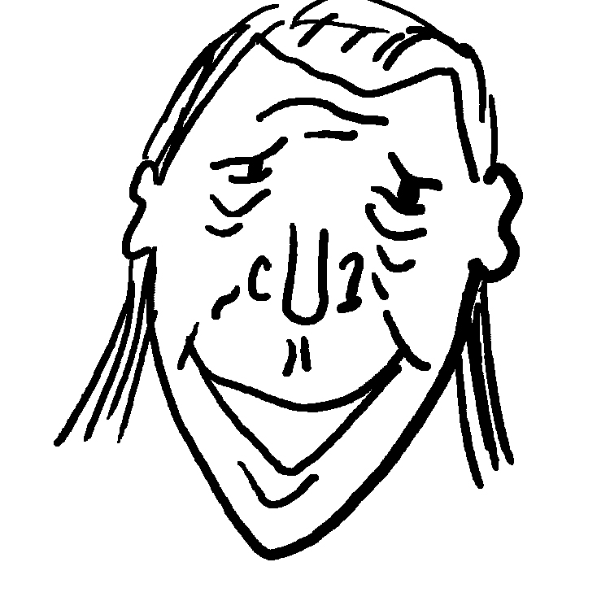

"Hey Abraham!" Dale screams.
Abraham turns around. "Dale, my friend."
Dale asks "What brings you here?"
Abraham says... "Getting my mojo back. Good to have you here Dale."
Abraham continued on, "Hey Dale, I remember you used to love to croon and so did I. How about we sing Unchained Melody together on the stage here. All the others seniors will love it."
Dale says "Don't be silly Abraham, that was a long time ago."
Nonetheless, Abraham remained persistent. " I will hear none of it Dale. Here's a microphone... the music's already playing... let's hit the stage."
Dale thought "Oh brother! What the heck, can't hurt to sing a few tunes."
Dale and Abraham went on to sing oldies for the seniors for the remainder of the night and everyone loved it. From then on, Dale and Abraham became the hit of the senior's club.